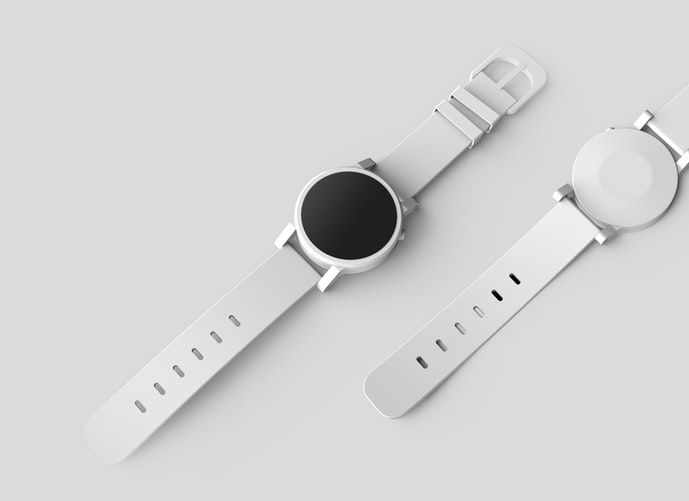

PRODUCT PHOTOGRAPHY
Black and white are the colors of photography. To me they symbolize the alternatives of hope and despair to which mankind is forever subjected



Other Projects
Black and white are the colors of photography. To me they symbolize the alternatives of hope and despair to which mankind is forever subjected